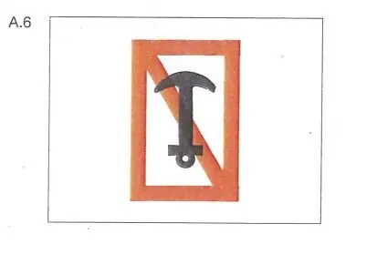

§ 6.18 Verbot des Schleifenlassens von Ankern, Trossen oder Ketten
Rheinschiffahrtspolizeiverordnung
1. | Es ist verboten, Anker, Trossen oder Ketten schleifen zu lassen. | |
2. | Das Verbot nach Nummer 1 gilt weder beim Treibenlassen, sofern dies gestattet ist, noch für kleine Bewegungen auf Liegestellen, Lade- und Löschplätzen sowie auf Reeden; es gilt jedoch für derartige Bewegungen auf Strecken, die nach § 7.03 Nr. 1 Buchstabe b durch das Tafelzeichen A.6 (Anlage 7) gekennzeichnet sind. |  |